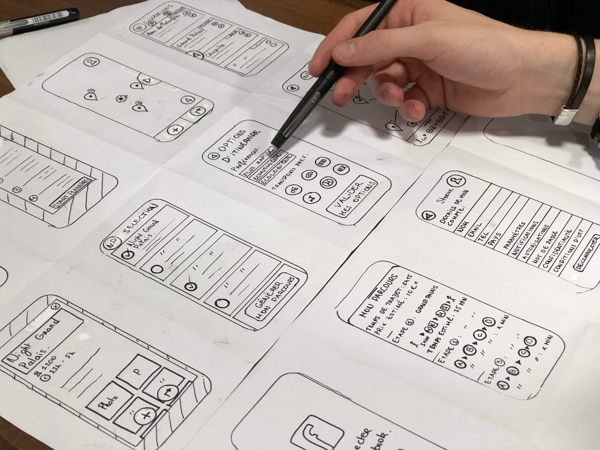

The Core Model
People come to our website to get something done. For users to meet their goals on our website, we need to implement our website design by using the core model. The core model allows us to focus on the core tasks that a user needs to get done. It ensures that the user’s needs are being thought of throughout the whole design process.
There are two main things needed for the core model: business objectives, and user tasks. What do you want to achieve and what do users want to get done. Then there is the overlap between the two which are the cores.
The core model helps to identify what the most important pages on a website are, what is needed on the page, and what important elements need to be emphasized. With the core model, you are able to better understand how pages are connected. Think about what goes inside a page before designing the page. What are the most important things that go on a page, and in what order? Think about how a user may find a page. Once users have their answers, where do you send them? Forward paths could include contact information for way to help, depending on the type of business it is.
Once all the steps for the core model have been completed, you can start thinking about a mobile approach, as this helps to prioritize tasks. Core sketches can be done to visually show this. Wireframes tell you about where something goes while core sketches tell you why it is there as well as what needs to be on which page.
I found this article to be useful and interesting. It made me think a lot more about how I could be making my website. When I’m starting, I think about how I can present my information, and what content I want on there. I never quite thought about user tasks, although I did think about how they can navigate from one page to the next. I think that this will help me more in the future because I’m always thinking about the content first, before designing, and this would help me prioritize my information more.
Source: The Core Model: Designing Inside Out for Better Results